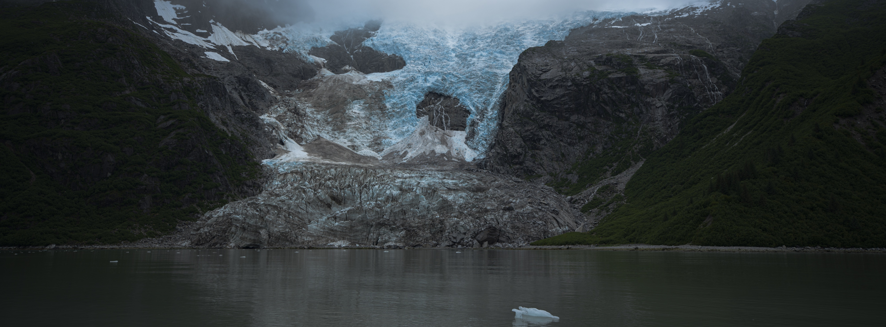
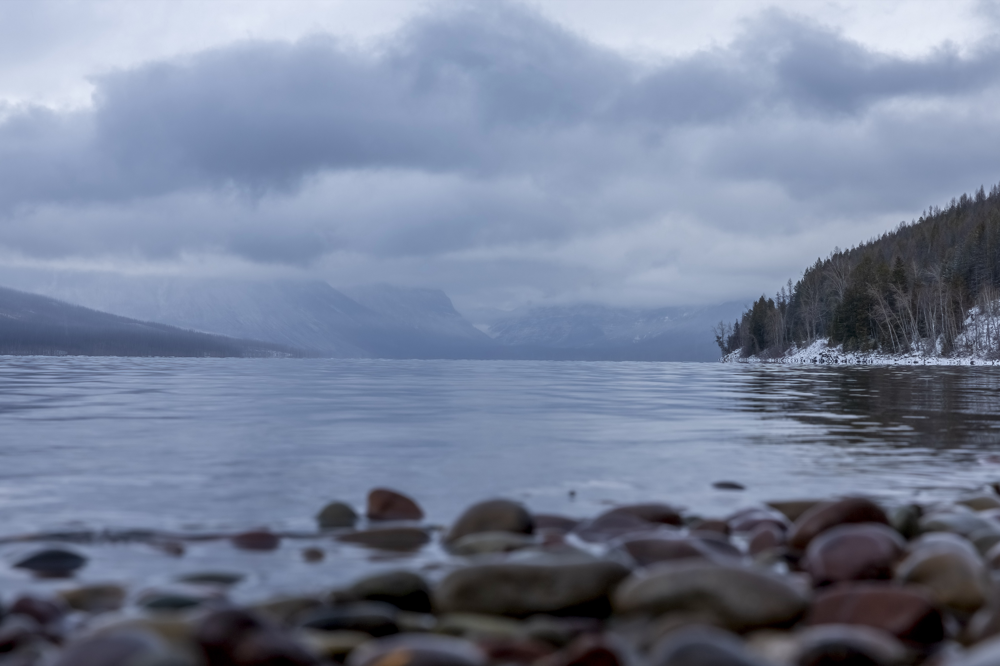
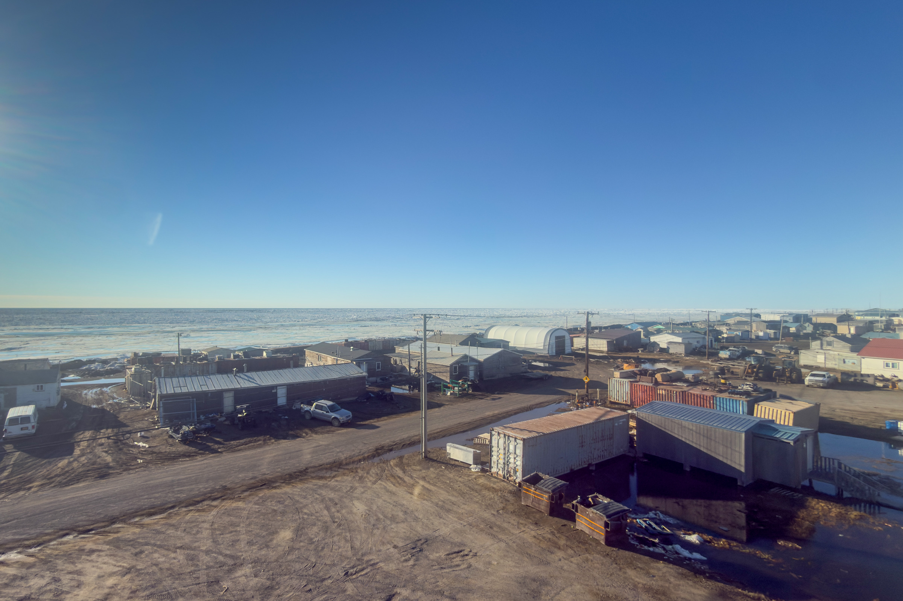
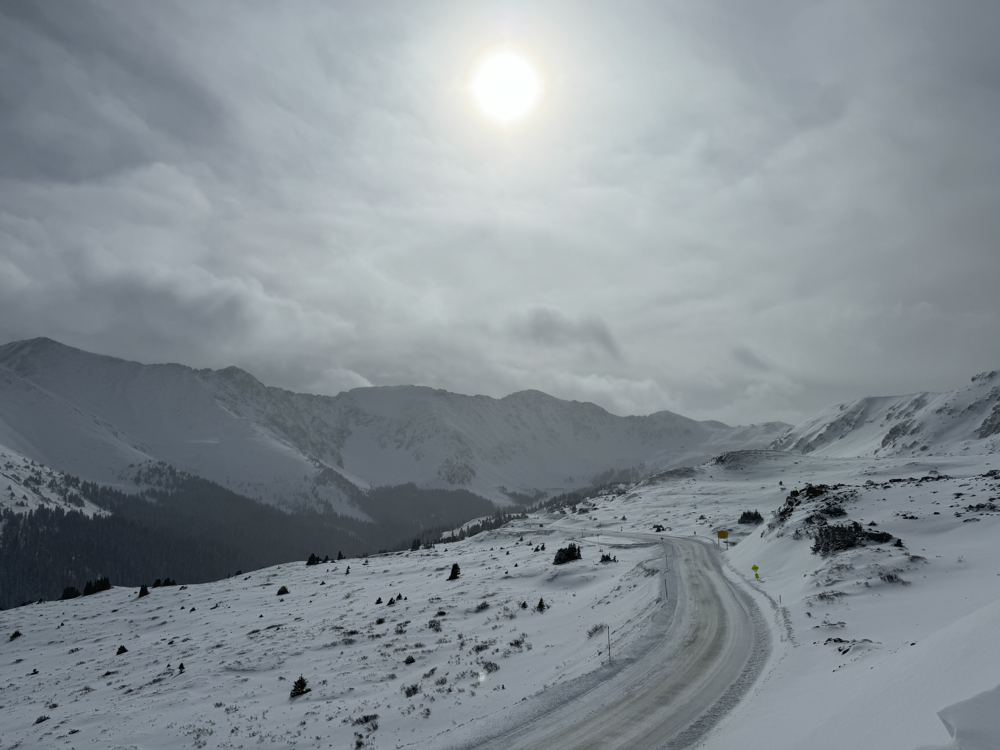
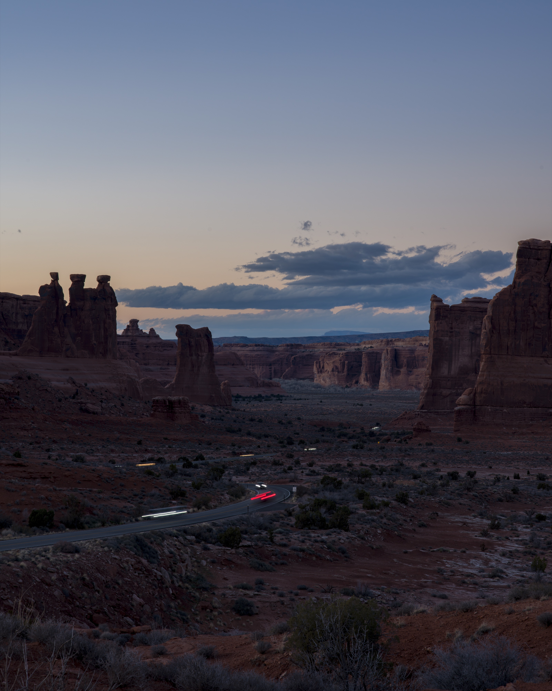

我的故事
我的摄影经历要从2015年说起。我的母亲为我报名参加了一个去斯里兰卡的自然观察活动。于是我拿起了家里的一台2010年的佳能550D，在斯里兰卡的几天里，拍了上千张鸟类和其他动物的照片。
回家后，我发现我还挺喜欢拍照，尤其是拍鸟。于是，初中时的我开始去家旁边的梅林水库，还有稍微远一点的深圳湾公园，继续拍鸟。我和鸟类的故事由此开始。十余年间，我有幸去到了世界上的许多角落，比如马来西亚、新西兰、乌干达、厄瓜多尔、摩洛哥等。截至2026年十月十五日：照片，我一共拍了五十一万余张。鸟类，我也记录到了令我自豪的1,373种（图1）。
2024年一月三日。早上，我结束了在西雅图的旅程，把朋友送到机场，随后出发去科罗拉多寻找白尾雷鸟。半夜，我正开车行驶在蒙大拿州的I-90高速公路上，突然看到一块指向Glacier国家公园的路牌。“Glacier？”大名鼎鼎的Glacier公园就在这里吗？我忙下高速，停在路边，拿出手机查询。我本要往东南，而Glacier在北边，去的话要多开六个小时的车。去不去？当然去。
次日十一点钟，我坐在公园的McDonald湖边（图2）。湖、雪山和冬天的死寂，我想不起几个比这更美好的上午。我知道这里冬天应该没什么鸟，但那个环境足以令我忘记自己。没什么鸟？突然，一只白枕鹊鸭（图3）从水里冒出，涟漪打破了镜般的湖面。
我看着它出来，再潜下去，再出来，再潜下去。来回几次，直到它远去。我没有拍它。
我最喜欢的是拍鸟本身吗？今年暑假，我去了阿拉斯加的乌特恰维克两次。每年夏天，大量的雁类、鹬类、鸭类、潜鸟类等在那里繁殖。我每天看到的鸟以千计。但对那个北极圈内的小镇，我却谈不上喜欢，因为鸟的旁边是数不清的垃圾（图4）、散架的房屋及废弃的雪地摩托。
我更喜欢满是鸟也满是垃圾的乌特恰维克，还是只有几只麻雀的犹他红层地貌，或是只有一只鸭子的Glacier高原湖泊？对我来说，鸟是环境的一部分，而环境从来不只是鸟的背景。
去年十一月，我买了一台哈苏相机（详情请看The Desert West）。我的风光摄影生涯由此开始。此时此刻，我正在魁北克，专程拍秋景。
那年的白尾雷鸟呢？我看到了，但是是在一年多以后。2025年四月九日，我再次来到科罗拉多寻找我先前错失的目标。彼时，科罗拉多低海拔的地区已经入春，但我所去的Loveland垭口海拔3,655米，仍然雪深及腰（图5）。在积雪中走了半个小时后，我终于找到了一只雷鸟。我在离它二十米远的地方开始拍照。我慢慢靠近。它似乎不是很怕我。十米？五米？三米？两米？一米？半米。（图6）
它就在我眼前，安静地坐在雪里。我趴下，放下相机，看着它。半米，我伸手就能摸到它。我今生还能有几次摸雷鸟的机会？但我的手，没有伸。
过了不知多久，我后退，起身，离开。它坐在原地。
有朋友问我为什么不养一只鸟。喜欢，就必须拥有吗？有时候，喜欢，是欣赏，是不去打扰，是让它坐在原地。
那个McDonald湖边的早晨、那个与雷鸟共同度过的下午、那个犹他Arches国家公园的黄昏（图7）……我明白了：对我，摄影在于记忆，在于创造那些终身难忘的记忆。
Quebec City, QC, Canada
Thu Oct 15, 2026, 4:22 PM
如果数据化我的摄影经历
设备
- 哈苏X2D II 100C
- 哈苏XCD 35-100mm F2.8-4 E
- 哈苏XCD 20-35mm F3.2-4.5 E
- 哈苏501CM
- 哈苏CF 80mm f/2.8
- 佳能EOS R5 Mark II
- 佳能EOS R6 Mark II
- 佳能RF20mm F1.4 L VCM
- 佳能RF70-200mm F2.8 L IS USM
- 佳能RF100-500mm F4.5-7.1 L IS USM
- 大疆Mavic 4 Pro
联系方式
- 邮箱：newtonliu1018@gmail.com
- Instagram：@i_see_most_birds
- Threads：@newton_z_l
- eBird：ISeeMostBirds
- XHS：newton_z_l








My story
The quantification of my photography career
Gear
- Hasselblad X2D II 100C
- Hasselblad XCD 35-100mm F2.8-4 E
- Hasselblad XCD 20-35mm F3.2-4.5 E
- Hasselblad 501CM
- Hasselblad CF 80mm f/2.8
- Canon EOS R5 Mark II
- Canon EOS R6 Mark II
- Canon RF20mm F1.4 L VCM
- Canon RF70-200mm F2.8 L IS USM
- Canon RF100-500mm F4.5-7.1 L IS USM
- DJI Mavic 4 Pro
Contact
- Email: newtonliu1018@gmail.com
- Instagram: @i_see_most_birds
- Threads: @newton_z_l
- eBird: ISeeMostBirds
- XHS: newton_z_l